My normal bed time is from 1:30am to 9: 30 am, which is a little bit too late for me to first make breakfast and then probabily have it around 10 am. So usually I will choose to have some light snacks to replace an actural breakfast when I don't have any morning shift, like apples, bananas, mixed nuts, and yogurt.
Usually I will include multiple vegies and make vegie-soups in the rest of meals.
Simply because they are much easier to prepare than meat lol (at least in my perspective, taking vegies out and do some choppings, steamming,
or frying is much more simplier than preparing a juicy and saucy meat dish.)
Yeah! So just take a look underneath and enjoy! :)
| Breakfast (Morning Snack) | Lunch | Dinner/Supper | Extra Snack | |
|---|---|---|---|---|
| Monday | No Breakfast/Snack for today | 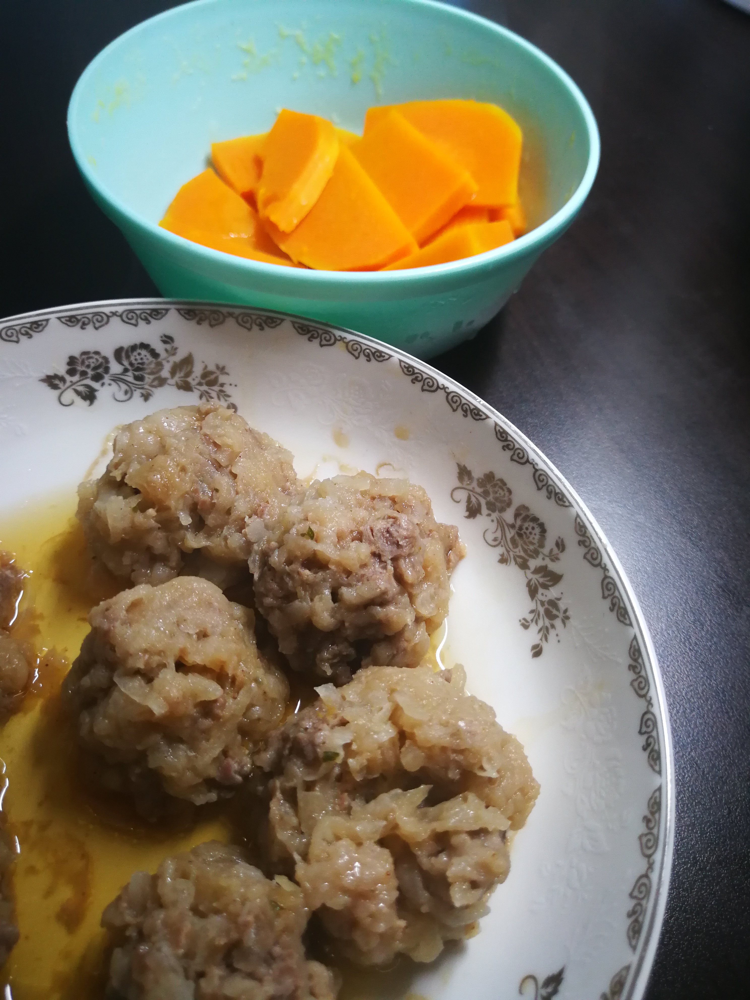 | 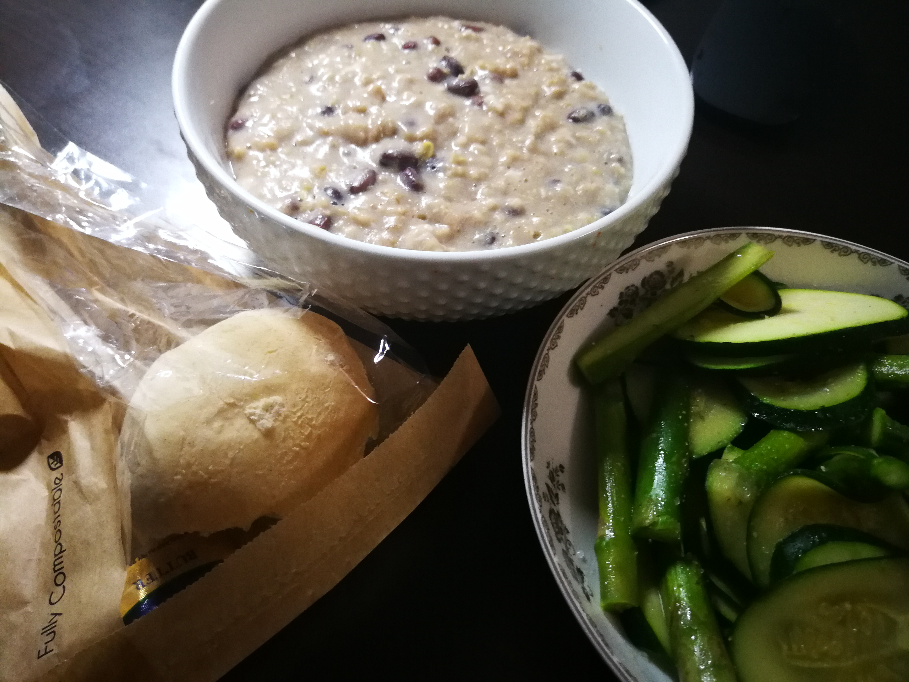 | No Snack for today~ |
| Tuesday | 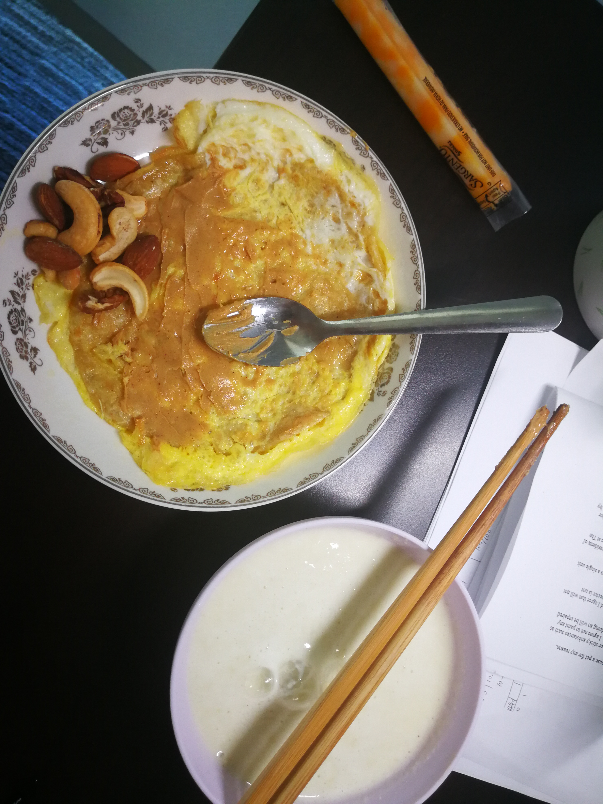 | 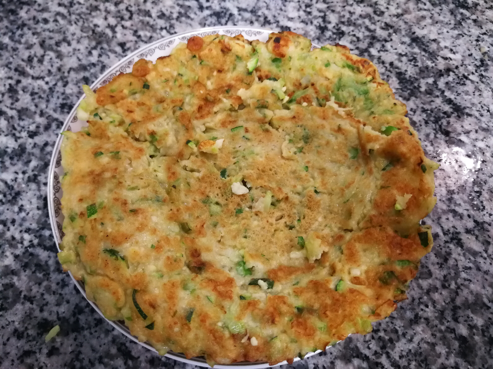 | 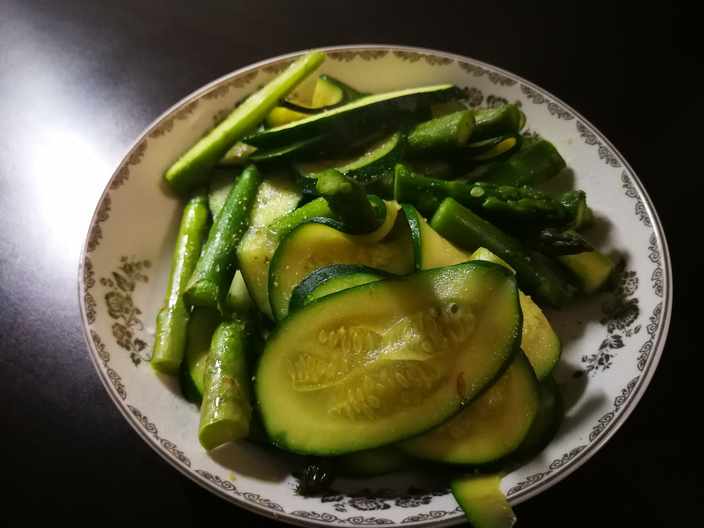 | No Snack for today~ |
| Wedndsday | 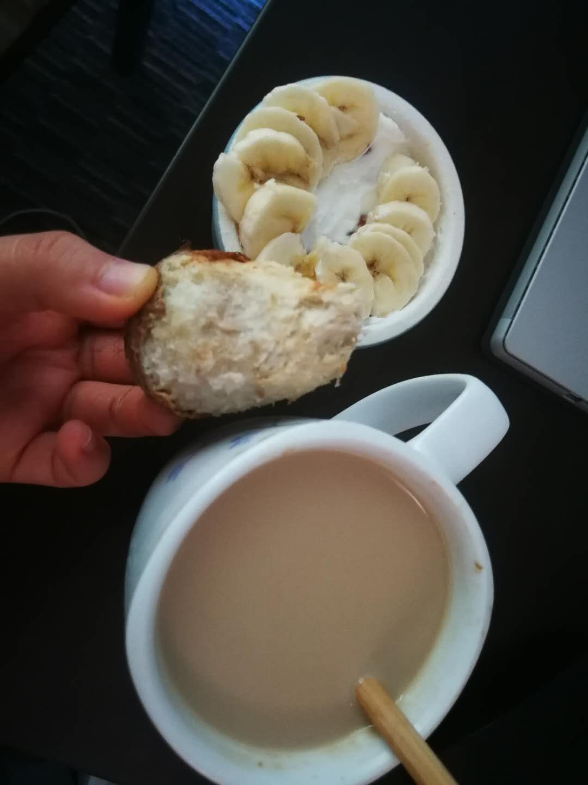 | 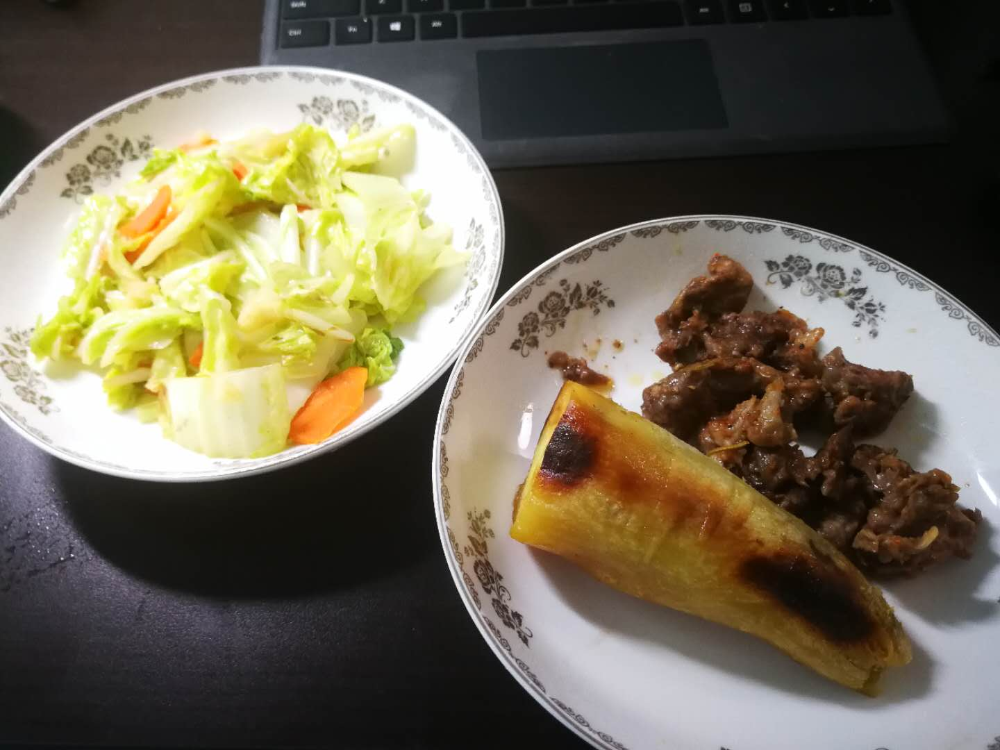 | 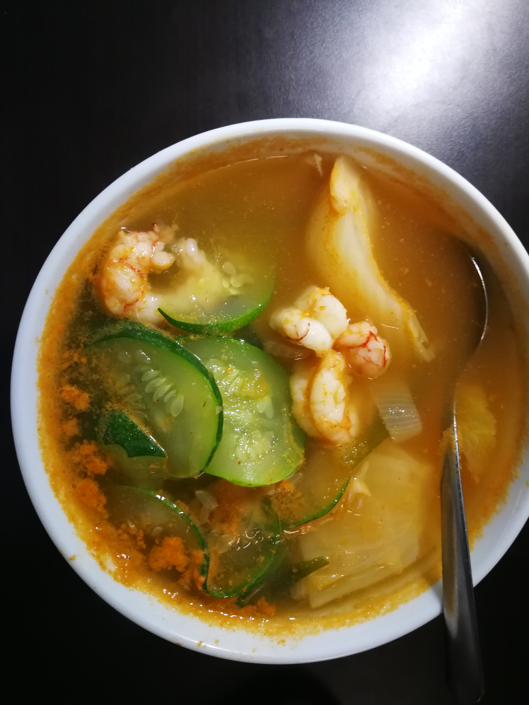 | No Snack for today~ |
| Thursday | 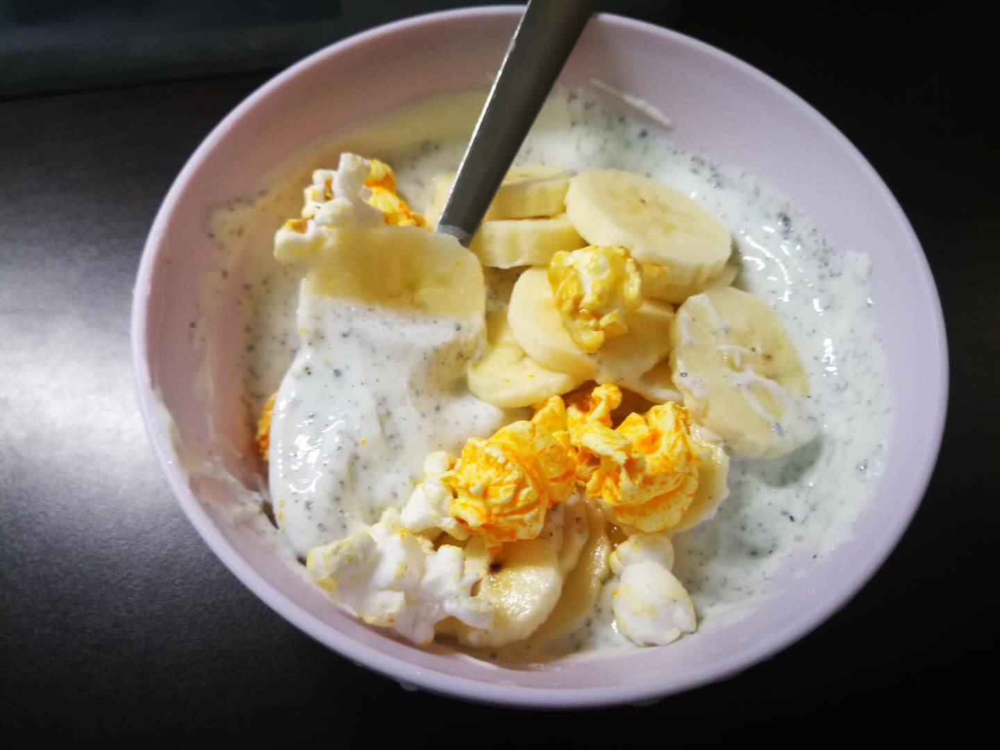 | 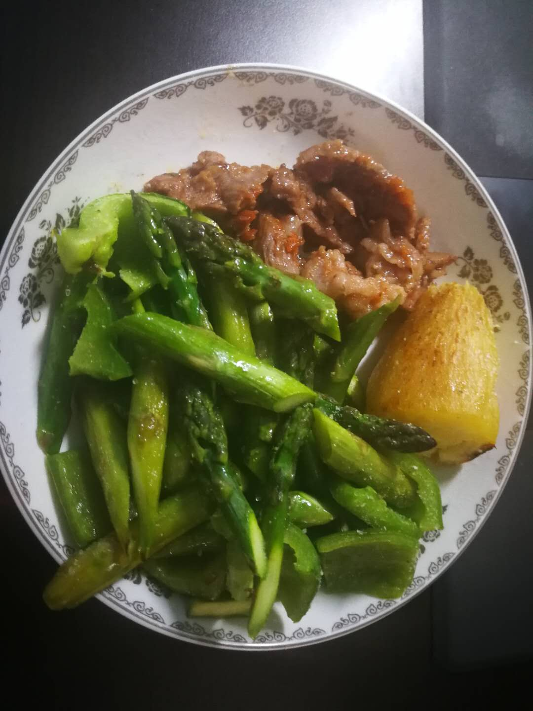 | 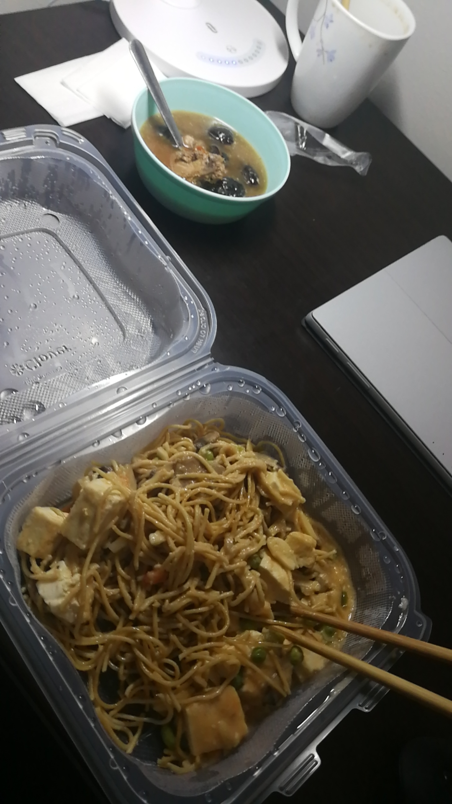 | No Snack for today~ |
| Friday | No Breakfast/Snack for today | 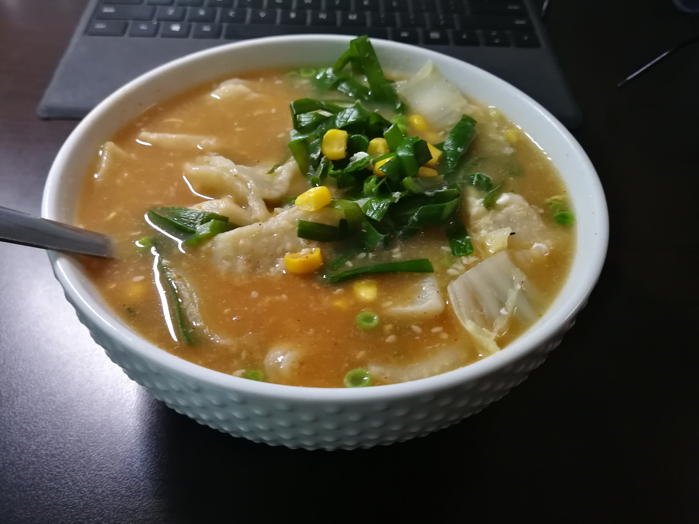 | 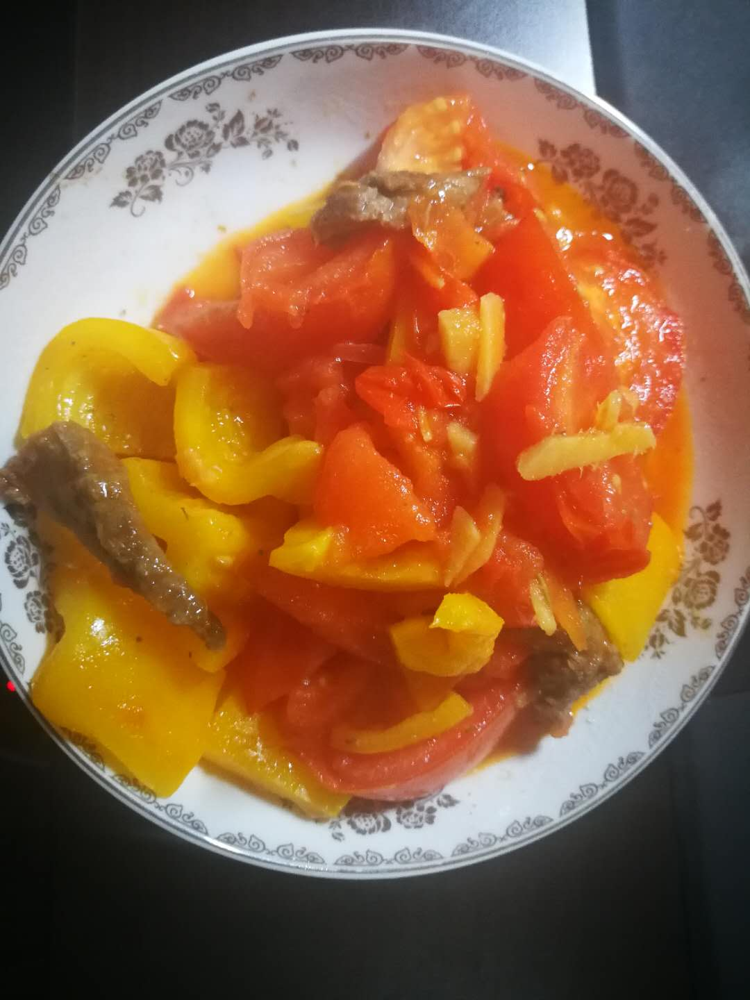 | 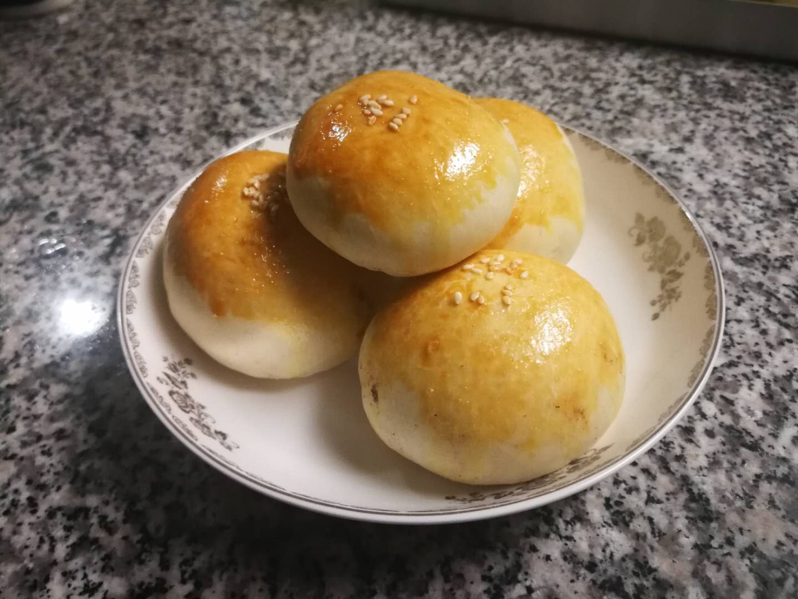 |